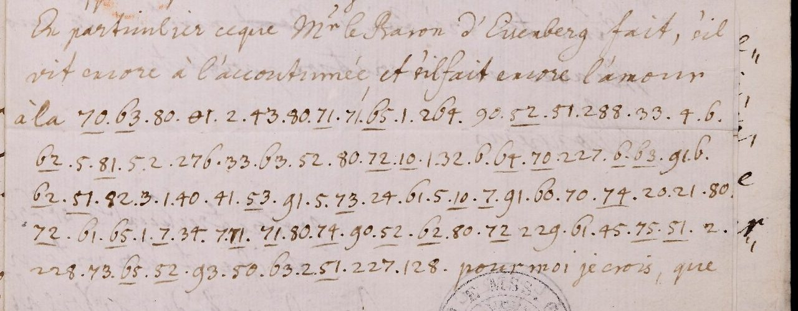

Cipher Letters › Modena, Biblioteca Estense › 1721-1727
"So as not to wake sleeping dogs": Selvatico Estense, Olivazzi and Starhemberg to Giuseppe Riva, 1721-1727
Nine letters in one syllabic number table to the Duke of Modena's agent in London: Modena's claim for war damage before the congress, a quarrel in Milan, and a request to watch the Emperor's resident. Read in part. The table was read off a decipherment written at the time on two sibling letters, then corrected from context.
- Letters
- Benedetto Selvatico Estense: Modena, "10 Xbre" [1721, probable]; Modena, "2 Genaro" [1722]; Vienna, 10 Jun, 29 Jul, 8 Aug and 12 Aug 1722. Giorgio Olivazzi: Milan, 17 Apr 1725. Count Starhemberg: Vienna, 20 Mar 1726. His secretary: Vienna, 19 Feb 1727.
- From / to
- Three writers → Giuseppe (Gioseffo) Riva, the Duke of Modena's secretary and agent in London
- Held at
- Biblioteca Estense Universitaria, Modena, Autografoteca Campori: S, Selvatico Estense cc. 2-3, 14-15, 21-22, 23-24, 25-26, 35-36; O, Olivazzi cc. 1-2; S, Starhemberg cc. 21-24
- Cipher
- A syllabic number table with a small nomenclator; 2,540 cipher units in the nine letters
- Read
- 2,175 of 2,540 units (85.63%); per letter from 73.74% (Olivazzi) to 90.88% (29 Jul 1722). Codes (201 units) are never counted as read.
- Record
- Cyphersolver, targets/riva1722 (issues #425, #429, #430, #432, #433); maintainer's write-up: riva1722

Decoded
What is new and what was known
Eleven letters to Riva use this table. Two of them, Starhemberg's letters of 27 Feb and 6 Mar 1726, carry a decipherment written between the lines at the time, by the recipient's side. That decipherment is the source of the key. Those two letters are not read here. The nine read here carry no gloss.
No claim of a first reading is made. Lowell Lindgren's article on Riva (Il Saggiatore musicale 23/2, 2016, pp. 277-374) was not seen: it is not open. At second hand it cites a Starhemberg letter to Riva of 13 March 1726, so Lindgren used the Starhemberg file. Whether he prints or deciphers any cipher passage is not known. Until someone reads it, every letter here is at risk of an earlier reading, the Starhemberg letters most. Lindgren and Timms (2003) and Stefani were searched in open copies: no cipher passage and none of these letters. The Modena-side records (Archivio di Stato di Modena, the cifrari) were not checked.
In this repository, targets/selvatico1719 (another contributor) reads the 1719 table and records the 1722 letters as "not solved" and the Starhemberg letters as "not worked".
What this work adds: transcriptions of the nine letters, a key (K3) carried from the two glossed letters to the nine, readings and English translations with every hole marked, the year of the "2 Genaro" letter, and a note on the probable writer of the Starhemberg letters.
The letters
Giuseppe Riva was the Duke of Modena's secretary and agent in London. His incoming letters are in the Autografoteca Campori in Modena, filed by writer.
The library files the Starhemberg letters under Guido von Starhemberg. The content fits Conrad Sigmund von Starhemberg, the Emperor's envoy in London: the 1727 letter speaks of a household and children in London (this rests on clear text the repository does not carry unverified), and the letter of 31 May 1721 has "il mio ritorno in Inghilterra ... con carattere d'Ambasciatore". The reviewer accepts this; the catalogue name is kept, with the note.
The "2 Genaro" letter has no year. The Gaceta de Madrid of 3 Feb 1722 reports the same journey of Cardinal de Rohan, which gives 1722. The "10 Xbre" letter is put in 1721 as probable, not proved.
What the letters say
Italian as read; English from the translations in the repository. [?word] = a code value or word proposed from context, not read; [186] = a code with no value; [...] = not read; a letter in brackets = supplied or emended.
Selvatico Estense, Modena, December 1721 and January 1722
On 10 December Selvatico does not believe the Congress will be held and disowns Rangoni's mission to Paris. In cipher, someone will soon go on to Paris or to a coded place, and orders will follow from the Duke. On 2 January the Princes of Modena and Cardinal de Rohan have come from Rome; the Cardinal, laid up with gout at Reggio, is about to leave for France; the Duke means to post a coded person elsewhere.
Selvatico Estense, Vienna, June to August 1722
Now in Vienna, Selvatico writes on Modena's claim to an indemnity for war damage, to be raised at the congress (Cambrai). He asks whether George I has been won for it. On 8 August the ministers in Vienna, pressed, admit that the Emperor will never promote the claim and would rather it were not raised, because the other side would then reopen other points, Mirandola among them.
"e forse [370] direbbe la [234] [?qualche] cosa della Mirandola""and perhaps [370] [234] would say [?some]thing about Mirandola"
On 12 August he has news of a move to have a coded place restored "to Pico", and the Emperor will not propose the indemnity:
"Per [?questo] motivo l'[?Imperatore] non vuole [186] a proporre l'indennizzazione, per non svegliare li cani che dormono.""For [?this] reason the [?Emperor] does not wish [186] to propose the indemnity, so as not to wake sleeping dogs."
This court, he adds, is not to be trusted much.
Olivazzi, Milan, 17 April 1725
Olivazzi writes about the party working against him: the payments at issue are the excuse, the aim is to keep him in bad repute and from advancement, and the Inquisition was used. He also writes on three interests of the Duke, one of which involves a proposal "to send an Archduchess". This is the least secure of the nine letters: it has many coded persons.
Starhemberg, Vienna, 20 March 1726
Starhemberg thanks Riva for three letters, says most of the news reached him first from others, and asks him to report punctually on the court and on general affairs. A yearly 100 pounds sterling is in question. Riva and "the friend in [Holland]" may count on at least a couple of hundred in fees between them this year, some of it from Starhemberg's own pocket. The Duke will find his account in it if he and his ministers stay "good Imperials". The middle of this letter has holes, and the terms of the 100 pounds are not secure.
Starhemberg's secretary, Vienna, 19 February 1727
The letter opens in French clear text about a baron's courtship, as cover. The cipher begins where the lady's name should stand:
"Tutto sin qua è fi[n]ta, ma Sua [264] pre[g]a [?V.S.] di osservare [276] dili[ge]ntemente adesso tutto [?quel] che si passerà nei affari, particolarmente con Palm""Everything up to here is [?feigned], but His [264] [?begs] [?you] to observe [276] [?diligently] now everything [?that] passes in affairs, particularly with Palm"
Palm was the Emperor's resident in London, expelled the next month. Riva is also to watch what measures the British court takes.
The cipher
A syllabic number table with a small nomenclator. Single figures 1-8 are a e i o r s t u. A ten is a consonant alone (10 b, 20 c, 30 d, 40 f, 50 g, 60 l, 70 m, 80 n, 90 p). A two-figure group XY with Y from 1 to 5 is consonant plus a e i o u. Each row has two consonants, one for the plain group and one for the underlined group (5: g / r, 6: l / s, 7: m / t, 8: n / v, 9: p / z; rows 1-4 give b c d f either way).
Underlined single figures and tens are words (non, in, il, che, con, per, -ment-, stato, tutto). An x-shaped sign before a vowel group adds h. A short stroke above a group doubles the consonant or marks an accent. Numbers of 100 and over are codes for names, titles and common words. Dates are written in clear as underlined numerals, which is how three of them were mistaken for cipher in an early filing.
How it was read
- 11 Nov 2026. A keyword harvest of the Estense catalogue (128 records with "cifra") found the two glossed Starhemberg letters of 1726. The unglossed letter of 20 Mar 1726 was transcribed and frozen before any key for this system existed.
- Key K2 was read off the decipherment written at the time on the two glossed letters. Applied to the 20 Mar 1726 letter, it gave Italian. The first count, 344 of 409 (84.11%), is withdrawn: three clear dates were counted as cipher and three groups were decoded by an unstated fallback.
- An outside red-team review (not Anthropic models) reproduced the 1726 decode, but decoded 53 of 136 lines of the 1722 letters differently because the parser rules were unstated. A parser contract was written before any further decode.
- 12 Nov 2026. Key K3: K2 with 15 rows changed or added from context in the four 1722 letters, each with at least two contexts, and 7 unglossed rows removed. 124 rows. The 1722 letters gave 1,273 of 1,436 units (88.65%) under it; that figure is in-sample.
- K3 was frozen (md5 65b083be69e3a4c6219c65566aee20fc) before the two undated Selvatico letters, the 1727 letter and the Olivazzi letter were transcribed. Each was decoded once with it, unchanged.
- The 20 Mar 1726 letter was redone with the dates as clear text and one decode with K3, no fallback: 351 of 406 units (86.45%) after 20 downgrades on reading.
- 16 Nov 2026. A decrypt audit found 11 words with a letter changed or supplied without a bracket in the 2,175 units counted read. Ten were bracketed; the counts files were not rebuilt.
Checks
- Shuffled keys: 5,000 keys, Italian quadgrams. The four 1722 letters: 0 of 5,000. The two undated letters together: 0 of 5,000 (the 10 Dec letter alone 44 of 5,000: too short alone). 1727: 0 of 5,000. Olivazzi: 0 of 5,000. 20 Mar 1726 under K3: 0 of 5,000, not re-run after the date fix. The reviewer reports his own 0 of 5,000.
- Blind second transcriptions: the 1722 letters, by a separate session frozen before any key or first transcription was opened: 1,390 of 1,441 aligned groups the same (96.46%). Olivazzi: a blind pass B, 349 of 379 groups the same as pass A (92.08%); 27 places were adjudicated on crops, and that adjudication was key-aware. The 20 Mar 1726 letter, the 1727 letter and the two undated letters have no second transcription.
- Statistical validation: the repository's test gives "pass" (z 11.0 against random keys).
- Maintainer's review (12 Nov 2026): Daniel Bourdeau reviewed the five issues and found the errors listed under Who did what. The review's spot check of 87 groups of the 1726 letter against the image gave 87 of 87, one accent tick missed. The notes list that image check among the checks by AI readers.
- Integration check: the build script reproduces every count; a second decoder written from the key and transcriptions alone agrees on 97 of 97 groups (1727) and 406 of 406 (20 Mar 1726). Time stamps of 11 Nov 2026 put K3 (21:30 GMT) before the 1727 letter (22:04) and the Olivazzi letter (22:13 and 22:25). They cannot show that no one looked at those letters earlier. An AI reader compared all 97 groups of c. 23r with the image: they agree.
How much is read?
| Letter | Cipher units read |
|---|---|
| Selvatico, Modena, 10 Dec [1721] (cc. 14-15) | 40 of 48 = 83.33% |
| Selvatico, Modena, 2 Jan [1722] (cc. 2-3) | 149 of 176 = 84.66% |
| Selvatico, Vienna, 10 Jun 1722 (cc. 21-22) | 128 of 150 = 85.33% |
| Selvatico, Vienna, 29 Jul 1722 (cc. 25-26) | 279 of 307 = 90.88% |
| Selvatico, Vienna, 8 Aug 1722 (cc. 35-36) | 675 of 757 = 89.17% |
| Selvatico, Vienna, 12 Aug 1722 (cc. 23-24) | 191 of 222 = 86.04% |
| Olivazzi, Milan, 17 Apr 1725 (cc. 1-2) | 278 of 377 = 73.74% |
| Starhemberg, Vienna, 20 Mar 1726 (cc. 21-22) | 351 of 406 = 86.45% |
| Secretary, Vienna, 19 Feb 1727 (cc. 23-24) | 84 of 97 = 86.60% |
| All nine | 2,175 of 2,540 = 85.63% |
A unit is a syllable or a word sign. Codes are never counted, nor are doubtful, unkeyed or emended units. Every letter is under the 95% bar, so all nine are "read in part". A rough count by words made at integration gives about 74% for the nine letters and 60% for Olivazzi: an estimate, not a measurement.
Held out from K3: 20 Mar 1726, 19 Feb 1727, Olivazzi and the two undated letters. The four 1722 letters are in-sample. 90 of the 2,175 read units use a row that K3 changed.
What remains uncertain
- Codes: 201 units in 74 different numbers, none counted read. Only two proposed values have a gloss of the time: 288 V.S. and 214 Olanda.
- 20 Mar 1726: 8 plain/underlined conflicts and three stretches not read. Whether a stroke runs under a group is not settled on the 1,400-px images, and the full-resolution crops were not re-viewed.
- Row 5 of the table (plain 51 and 52) and the groups 5_, 30_, 50_, 0_, 9_ and 9 are open.
- K2 cannot be re-derived from the files: only 10 gloss pairs and a rough group reading of c. 5r were written down, and the two glossed letters are not transcribed in full.
- Olivazzi: four stretches not read; the right edge of 2v lies under the facing leaf.
- The audit of 16 Nov 2026 bracketed ten places that are still marked read in the counts files, so the strict counts are about ten units too high until those files are rebuilt.
- The clear text of all letters was read by one reader (the model) and is abridged in places.
- Lindgren 2016 not seen, so priority is not established. 111 further Riva records were not checked for this table, and 26 of 535 are unaccounted for.
Who did what
The key rests on a decipherment written in 1726 on Starhemberg's letters of 27 Feb and 6 Mar (cc. 5-10, 19-20). Malcolm McBratney (Brisbane) contributed the work, with Claude (Anthropic) sessions finding the letters, transcribing, building the key, reading and checking. Another contributor (recorded as lccompany) had made two passes of the two undated Selvatico letters in targets/selvatico1719; they were used for comparison only and agree at 159 of 176 and 45 of 48 groups. An outside red-team review (not Anthropic models) checked the early decode. Daniel Bourdeau reviewed the five issues on 12 Nov 2026: he found the clear dates and the fallback in #425, that "56 repairs" was 15 key rows, that #433 was not read on the consensus, and he accepts that the Starhemberg letters fit Conrad Sigmund, not Guido.
Sources
- Biblioteca Estense Universitaria, Modena, Autografoteca Campori. IIIF manifests: Starhemberg, 20 Mar 1726: manifest; the glossed letters of 27 Feb 1726: manifest, and 6 Mar 1726: manifest.
- Cyphersolver, targets/riva1722: transcriptions, key, readings, translations, counts and checks.
- Cyphersolver write-up: riva1722.
- Lowell Lindgren, "Gioseffo Riva (1682-1739), a Diplomatic Arbiter of 'buon gusto' in the London of George I", Il Saggiatore musicale 23/2 (2016), pp. 277-374. Not seen.